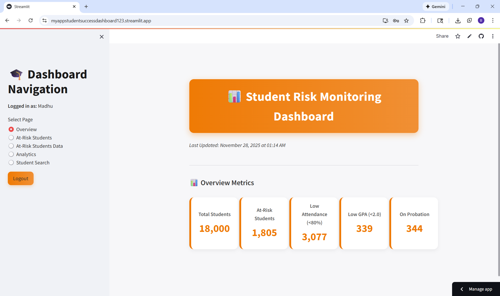
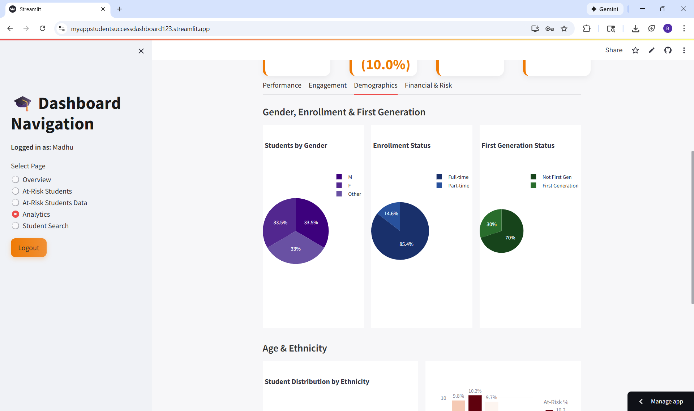

Dashboard & Data Analysis
The Student Risk Monitoring Dashboard was designed to meet the needs of Horizon State University advisors by combining early risk detection, unified student insights, and actionable intervention tools in a streamlined interface. The dashboard follows a top-down flow: advisors begin with an overview of institutional-level indicators, move into individualized at-risk student lists, and explore deeper analytic insights through visualizations. Live dashboard: myappstudent-successdashboard123.streamlit.app
Overview Metrics
Five key metric cards displaying total students (18,000), at-risk students (1,805 representing 10.0%), low attendance students (<80% threshold: 3,077), students with GPA below 2.0 (339), and students on academic probation (344). Provides instant snapshot of institutional health and risk distribution for quick assessment.
At-Risk Students with Pagination

Interactive slider allowing advisors to adjust minimum dropout probability from 0-100%, currently set at 30%. Paginated student list showing 1-10 of 1,805 students with expandable accordion-style records. Each student entry displays Student ID, GPA, and risk percentage with dropdown arrows for accessing comprehensive profile information.
At-Risk Students Data Table

Comprehensive data table with advanced filtering capabilities including major dropdown selector, maximum GPA slider (0.00-4.00), and maximum attendance percentage slider (0-100%). Currently showing 4,810 at-risk students with sortable columns displaying Student ID, Major, Term, Cumulative GPA, Attendance Rate, and Assignments On Time percentage for cross-variable analysis.
Student Analytics Dashboard
Multi-tab analytics interface displaying four summary metrics (Total Students: 18,000, At-Risk: 1805 at 10.0%, Average GPA: 2.84, Average Attendance: 87.7%).Tab navigation provides access to Performance, Engagement, Demographics, and Financial & Risk analytics.
Student Search

Clean search interface enabling advisors to quickly access individual student profiles by entering Student ID. Provides rapid access for one-on-one meetings, intervention follow-ups, and personalized advising workflows without browsing through large datasets. Supports preparation for scheduled appointments and review of student progress.
Analytical Visualizations
Comprehensive data visualizations revealing patterns, trends, and risk factors across the student population

Attendance Rate Distribution with 80% Risk Threshold
Attendance Rate Distribution with 80% Risk Threshold Histogram displaying the distribution of student attendance rates across the institution, with a critical 80% threshold marked by the red dashed line. The visualization reveals a right-skewed distribution with the majority of students maintaining strong attendance: approximately 4,000 students achieve 90-95% attendance (the highest peak), while 3,000 students maintain 85-90% attendance. However, the left side of the threshold shows concerning patterns with approximately 2,700 students in the 75-80% range, 1,300 students at 70-75%, 500 students at 65-70%, and small groups below 65% attendance. Combined, roughly 3,077 students fall below the 80% threshold, representing the at-risk population requiring immediate advisor outreach and intervention to prevent further disengagement and potential dropout.

Cumulative GPA Distribution with 2.0 Academic Probation Threshold
This histogram displays the distribution of cumulative GPA (Grade Point Average) across a population, with a red dashed line marking a 2.0 threshold. The x-axis represents GPA values ranging from 1.5 to 4.0, while the y-axis shows the count or frequency of students at each GPA level. The distribution is roughly bell-shaped but slightly left-skewed, with the highest concentration of students having GPAs between 2.5 and 3.0, where the count peaks at approximately 3,500 students. The 2.0 threshold likely represents a minimum academic standing requirement, such as the cutoff for good academic standing or eligibility for certain programs. Notably, the majority of students fall above this threshold, with relatively few students (fewer than 500) having GPAs below 2.0. The distribution tapers off at both extremes, with fewer students at the lowest (below 2.0) and highest (above 3.5) GPA ranges, suggesting most students maintain moderate to good academic performance

At-Risk Students by Major
This horizontal bar chart illustrates the number of at-risk students across different academic majors, with color intensity indicating the percentage of at-risk students within each program. Mathematics leads with the highest count of 243 at-risk students, shown in the darkest maroon color, suggesting it has the highest percentage (approximately 12%) of students facing academic challenges. Computer Science and Engineering follow closely with 215 and 210 at-risk students respectively, also displaying darker red tones that indicate relatively high percentages. The mid-range includes health and science programs like Nursing (192), Chemistry (185), and Biology (184), shown in lighter orange shades representing percentages around 10%. The majors with fewer at-risk students include Psychology and Arts (both at 150), Education (145), and Business (131), displayed in the palest colors indicating lower percentages around 8%.

Students by Gender, Enrollment Status, and First Generation Status
Students by Gender (left chart in purple tones): The student body is nearly evenly distributed across three categories, with male students at 33.5%, female students at 33.5%, and students identifying as "Other" at 33%. This shows a remarkably balanced gender distribution with strong representation across all categories. Enrollment Status (middle chart in blue tones): The vast majority of students are enrolled full-time at 85.4%, while part-time students make up only 14.6%. This indicates a predominantly full-time student population, which is typical for traditional undergraduate institutions. First Generation Status (right chart in green tones): Non-first-generation students comprise 70% of the population, while first-generation college students represent 30%. This shows that while most students have family members who attended college before them, there is still a substantial proportion of students who are the first in their families to pursue higher education, highlighting the importance of support services for this demographic.

Student Distribution by Ethnicity & Age Group Risk Analysis
Dual visualization providing demographic insights and risk pattern analysis. The left panel, "Student Distribution by Ethnicity," displays remarkably balanced representation with approximately 3,650 White students (red bar), 3,600 Asian students (mint green), 3,600 Hispanic students (turquoise), 3,550 Black students (blue), and 3,550 Other category students (purple). The color gradient from 3,550 to 3,650 shows minimal variation, confirming equitable ethnic representation. The right panel, "Age Group Risk Analysis," reveals at-risk percentages across five age cohorts: Under 20 shows 9.8% at-risk (lightest peach), the 20-25 cohort displays 10.2% at-risk (darkest burgundy, representing the highest risk group), 26-30 shows 9.7% at-risk (light peach), 31-35 shows moderate risk (medium peach), and 35+ shows 10.2% at-risk (medium-dark peach). The 20-25 age group annotation ("Age Group=26-30, At-Risk %=9.7") highlights this as the largest student cohort. The remarkably consistent at-risk percentages (9.7-10.2% across all ages) demonstrate that our predictive model evaluates students based on behavior and performance rather than demographic characteristics, ensuring ethical, unbiased risk assessment across all ethnic and age groups.

Predicted Dropout Probability Distribution
This histogram displays the distribution of predicted dropout probabilities for students, revealing a stark bimodal pattern. The x-axis represents the predicted dropout probability ranging from 0 (no risk) to 1 (high risk), while the y-axis shows the count of students in each probability range. The distribution shows two distinct peaks at opposite ends of the spectrum. The overwhelming majority of students, approximately 15,000, cluster at the far left near 0, indicating they have a very low predicted probability of dropping out. Conversely, a much smaller group of around 2,000 students appears at the far right near a probability of 1, suggesting they are at extremely high risk of dropping out. The middle range (probabilities between 0.2 and 0.8) is nearly empty, with minimal student counts.

Feature Correlation Heatmap Analysis
Comprehensive correlation matrix (15×15) displaying relationships between academic, engagement, behavioral, and risk prediction variables using a red-to-blue color scheme (correlation values from +1 to -1). The diagonal dark red line represents perfect self-correlation (1.0). Critical findings reveal strong positive correlations among academic metrics: gpa_term and cum_gpa show deep red correlation (~0.8-0.9), indicating consistent performance across terms. Engagement behaviors cluster together with moderate positive correlations: attendance_rate, assignments_on_time_pct, and lms_logins show light red/orange relationships (~0.3-0.5), confirming that engaged students participate across multiple dimensions. The bottom two rows (pred_dropout_probability and pred_at_risk_flag) are particularly revealing: they display strong negative correlations (dark blue, ~-0.4 to -0.6) with academic performance metrics (cum_gpa, gpa_term, attendance_rate) but show positive correlations (blue/purple, ~0.2-0.4) with risk indicators like course_drop_count. Notably, demographic factors (age, gender, ethnicity) show minimal correlation with dropout probability (light blue/white, near 0), validating our ethical modeling approach. Work_hours_per_week displays a notable negative correlation (dark blue) with advisor_meetings and tutoring_sessions, suggesting working students have less time for support services. This heatmap confirms that academic performance and engagement behaviors are the strongest predictors of student success, justifying our feature selection strategy and demonstrating that the model prioritizes actionable behavioral indicators over immutable demographic characteristics.